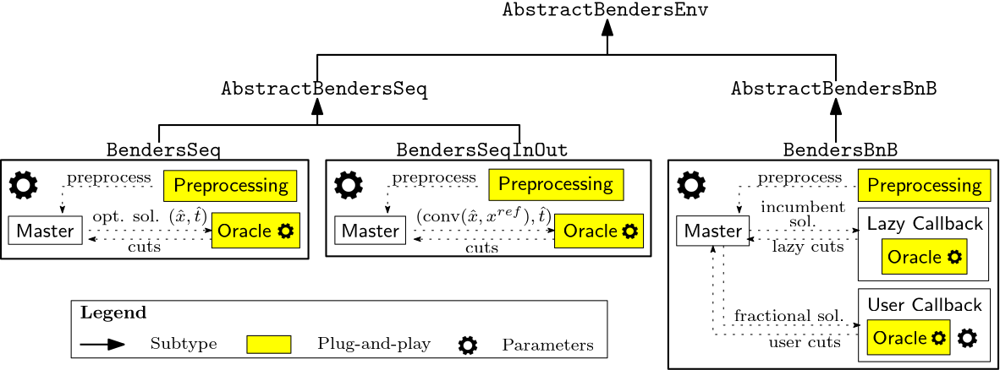
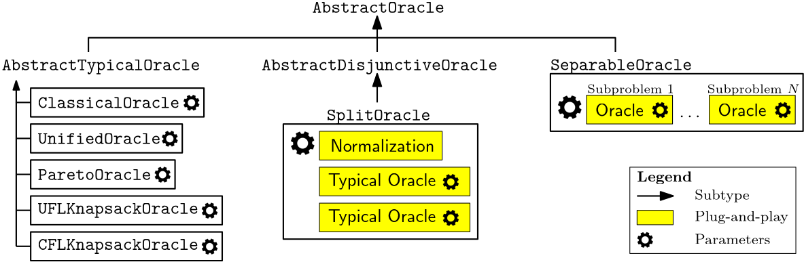
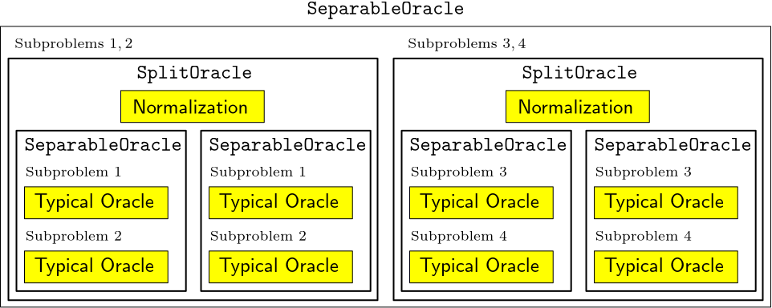

User Guide
Master, Oracle, and Environment
BendersX.jl organizes a Benders decomposition algorithm around three core components: the Master, Oracle, and Environment. Each component has a distinct responsibility and can be specialized independently.
Master
The Master maintains the current master problem, incorporates generated Benders cuts, and provides candidate solutions for Oracle evaluation.
Conceptually, the Master:
- represents the current relaxation of the Benders reformulation;
- refines the relaxation by incorporating generated Benders cuts; and
- provides candidate solutions for separation.
In BendersX.jl, a Master is represented by a subtype of AbstractMaster. The provided Master implementation is JuMP-based and can be customized at two levels:
- Change the master formulation. Define a new
update_master_model!method while retaining the providedMasterimplementation. - Change the master implementation. Define a new subtype of
AbstractMasterand implement its public interface.
These mechanisms are independent. A new master formulation does not require a new AbstractMaster subtype.
Oracle
An Oracle performs candidate separation and generates Benders cuts.
In BendersX.jl, an Oracle:
- is implemented as a subtype of
AbstractOracle; - receives candidate linking and auxiliary values;
- determines membership in the set it represents; and
- returns generated cuts and the corresponding subproblem objective values if available.
Oracle behavior can be configured through parameters such as violation tolerances and cut-selection rules. Oracles can also be composed through higher-level implementations such as SeparableOracle and SplitOracle.
Environment
The Environment controls the execution of the Benders algorithm. It coordinates Master optimization and Oracle evaluation, determines when generated cuts are incorporated, and manages termination.
In BendersX.jl, an Environment:
- is implemented as a subtype of
AbstractBendersEnv; - coordinates the interaction between the Master and Oracle; and
- defines the overall execution strategy.
Environment behavior can be adjusted through parameters and configurable subcomponents such as preprocessing and callbacks.
Component Architecture
The Master, Oracle, and Environment interfaces support both specialization and composition. The following diagrams summarize the main relationships among the provided implementations.
Environments

Environment architectures. BendersSeq, BendersSeqInOut, and BendersBnB differ in how Master optimization, preprocessing, Oracle evaluation, and callbacks are coordinated. The Oracle remains a replaceable component of each execution strategy.
Oracle Implementations

Oracle implementations and composition. BendersX provides several typical Oracle implementations. SeparableOracle composes Oracles associated with different subproblems, allowing each component Oracle to be selected or specialized independently.
Oracle Composition

Oracle composition. Higher-level Oracles can be constructed by composing other Oracles. SplitOracle combines two typical Oracles together with a normalization strategy, while the underlying typical Oracles remain replaceable.
Adding New Masters
For most problems, users only need to define the master formulation through update_master_model! and use the provided Master implementation.
A new AbstractMaster subtype is needed only when the master representation or master-side behavior itself should change. Custom implementations interact with the rest of BendersX through the AbstractMaster public interface:
master_modelprovides the underlying JuMP model;linking_variablesandauxiliary_variablesprovide the variables used by the Benders algorithm;copy_linking_variable_tuple!provides the structured linking variables used to construct subproblem models;evaluate_objectiveevaluates the original objective at supplied linking and auxiliary values; andadd_cuts!incorporates generated Benders cuts into the master.
A custom Master is therefore free to use its own internal representation. For example:
struct MyMaster <: AbstractMaster
jump_model::JuMP.Model
linking_vars::Vector{JuMP.VariableRef}
auxiliary_vars::Vector{JuMP.VariableRef}
# additional fields
end
BendersX.master_model(master::MyMaster) = master.jump_model
BendersX.linking_variables(master::MyMaster) = master.linking_vars
BendersX.auxiliary_variables(master::MyMaster) = master.auxiliary_vars
# Implement the remaining AbstractMaster interface as required.Adding New Oracles
A custom separation procedure can be implemented by defining a new AbstractOracle subtype:
struct MyOracle <: AbstractOracle
# fields
endand implementing generate_cuts:
function generate_cuts(
oracle::MyOracle,
linking_values::Vector{Float64},
auxiliary_values::Vector{Float64};
tol_normalize = 1.0,
time_limit = 3600,
)
# Generate cuts that separate (x_value, t_value).
return is_in_L, hyperplanes, sub_obj_vals
endThe returned values indicate whether the candidate belongs to the set represented by the Oracle, the generated Vector{Hyperplane}, and the subproblem objective values corresponding to the represented auxiliary variables.
Existing Oracles can also be composed. For example, SeparableOracle combines component Oracles representing different subproblems, while SplitOracle constructs disjunctive cuts from two typical Oracles.
Adding New Environments
A custom execution strategy can be implemented by defining a new AbstractBendersEnv subtype:
struct MyEnv <: AbstractBendersEnv
# fields
endand implementing its execution procedure:
function solve!(env::MyEnv)::DataFrame
# execution logic
endA custom Environment can reuse existing Master and Oracle implementations through their public interfaces. This allows execution strategies such as stabilization, callback-based execution, or distributed coordination to be introduced without changing the underlying problem formulations or separation procedures.
Rule of Thumb
- If you are changing the master formulation, customize
update_master_model!. - If you are changing the master-side behavior, define a new Master implementation.
- If you are changing how candidates are separated or which cuts are generated, customize the Oracle.
- If you are changing how Master optimization and separation are coordinated, customize the Environment.